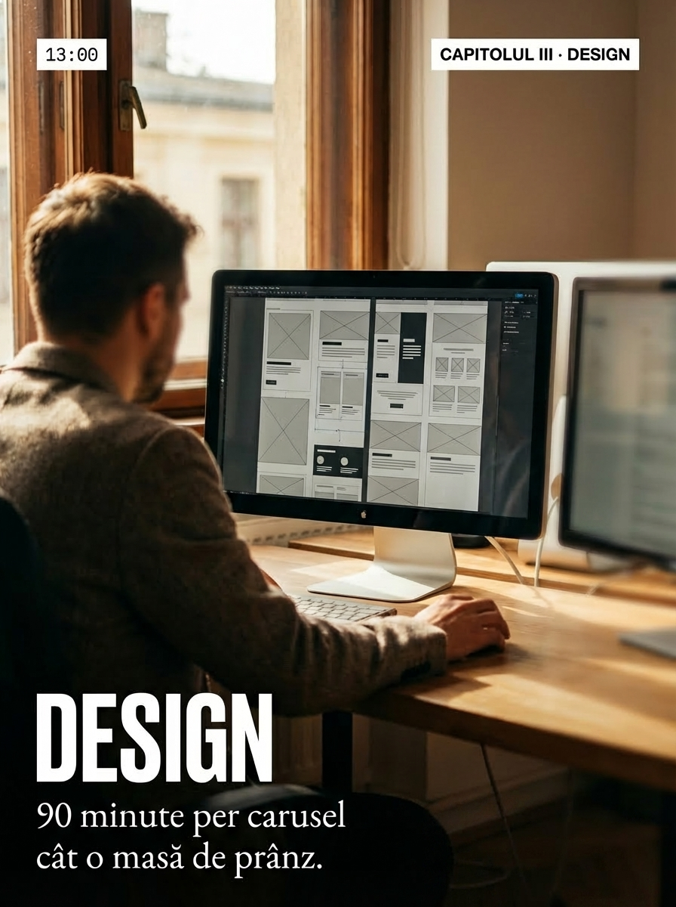
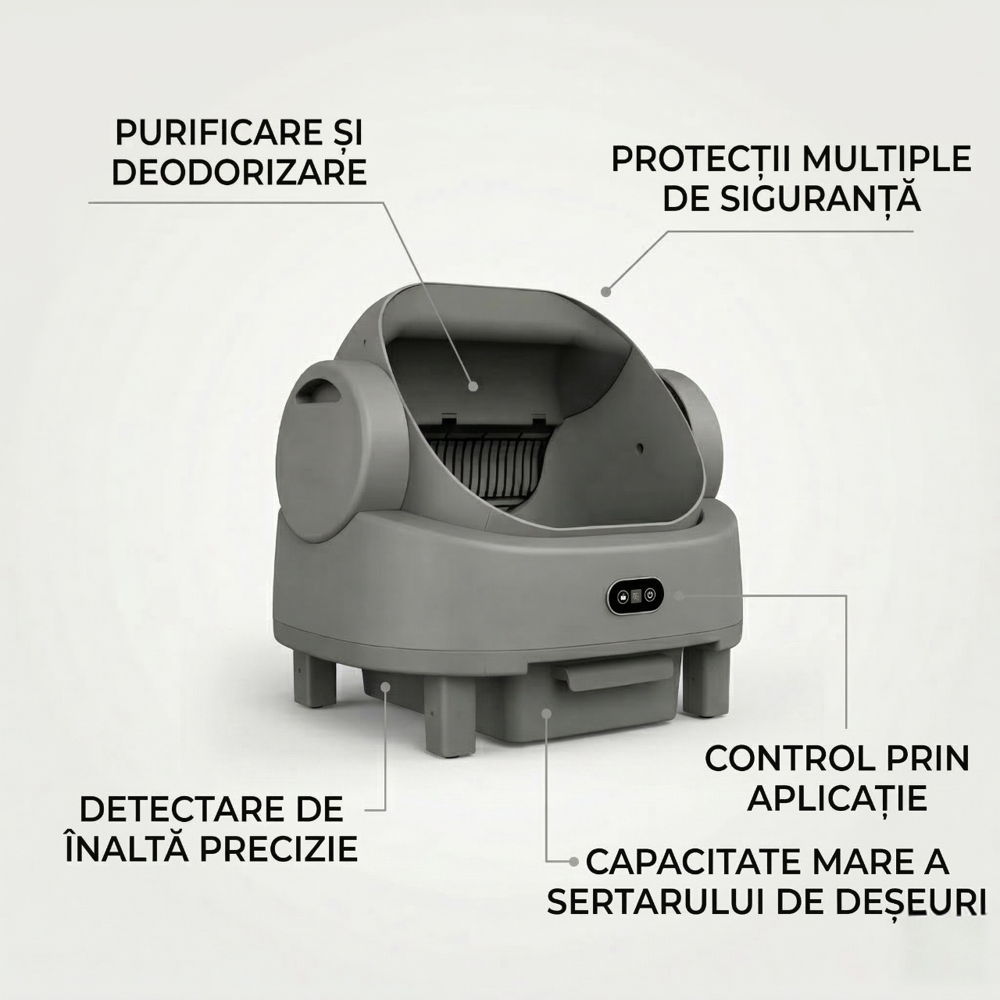
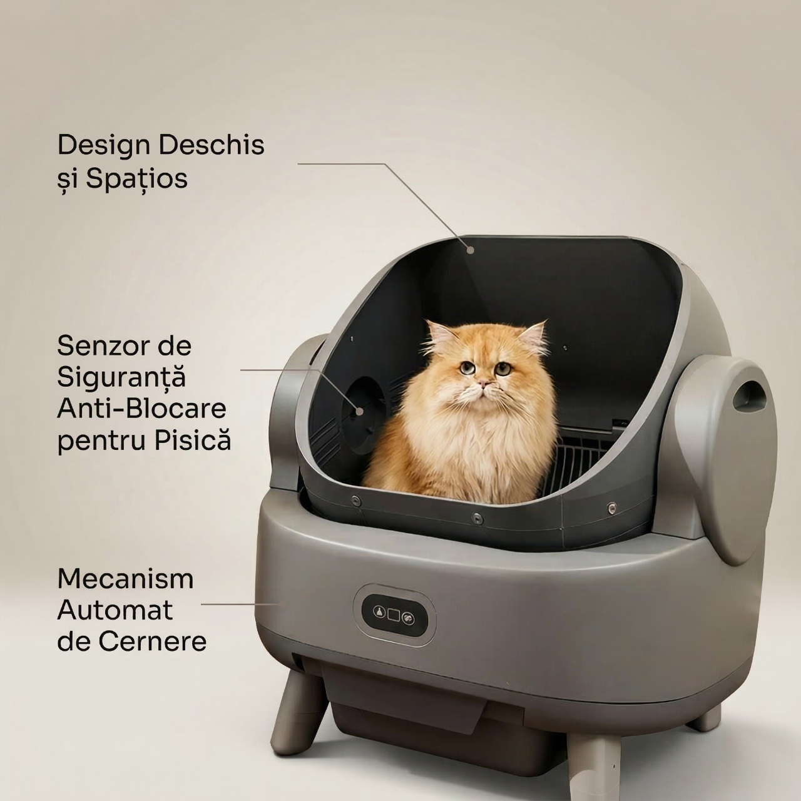

Social Carousel
i-Vory Creative — Commercial Carousel 1
Educational carousel for social media — hook-driven structure with brand-consistent visual identity. All in-image text rendered with Romanian diacritics directly from prompt.


Social Carousel
i-Vory Creative — Commercial Carousel 2
Educational commercial carousel — debunking social media myths with data-driven slides. Bold typography, high-contrast visuals, Romanian text with diacritics rendered directly from prompt.


Social Carousel
i-Vory Creative — Showcase
Brand showcase carousel — visual identity system demonstration. Consistent palette, typography, and composition language across all frames.





Social Carousel
i-Vory Creative — Storytelling
Narrative-driven carousel with emotional arc. Hook on slide 1, tension through middle frames, resolution and CTA on final slide.


Social Carousel
UrbanCat — Promotional Carousel
Product promotional carousel for cat-niche D2C brand. Pet-product interaction in lifestyle context, UGC-style aesthetic, AI-generated with consistent character across frames.


Social Carousel
Andreas Popa — Educational Legal Carousel
Educational carousel for a criminal defense lawyer client. Legal content adapted for social media consumption — complex concepts simplified visually while maintaining professional authority.


Product Photography
UrbanCat — AI-Generated Product Shots
E-commerce product imagery — studio shots, lifestyle compositions, and pet-product interaction. All AI-generated, zero traditional photography. Formats optimized for marketplace listings, PDP pages, and paid ads.




Social Posts
Emotional Single-Image Posts
Standalone emotional posts for engagement. Cinematic compositions with integrated Romanian text and diacritics rendered directly in-image.